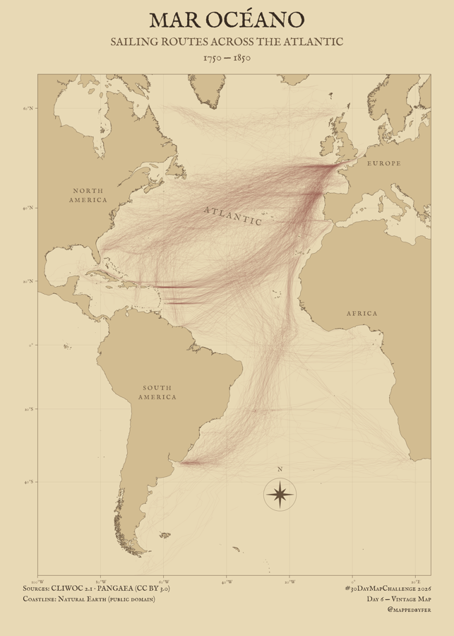

MAR OCÉANO

SAILING ROUTES ACROSS THE ATLANTIC · 1750—1850
CLIWOC ship logs preserve daily positions from vessels crossing the Atlantic. This parchment chart connects only consecutive, screened observations, revealing fragments of documented movement rather than invented port-to-port routes.
The idea
Before modern navigation, ship logs recorded positions and weather as vessels crossed the Atlantic. MAR OCÉANO presents a surviving sample of those observations in the visual language of an early nautical chart. These records describe a colonial maritime system tied to imperial power, resource extraction and unequal exchange; the lines should not be read as a neutral or complete picture of Atlantic life.
How it was made
The map includes 1,089 selected voyage records, 47,600 positions and 45,303 straight connections between consecutive recorded positions dated 1750–1850. Voyage identifiers combine the source logbook ID and documented voyage-start date. Connections with unreliable positions, large time gaps, implausible displacements or land intersections are excluded. The lines are observed-position links, not smoothed tracks or complete journeys; their density does not measure trade volume.
Sources & limitations
Historical data: CLIWOC Database 2.1, PANGAEA, CC BY 3.0. Coastline context: Natural Earth, public domain. The Edinburgh sailings sample was inspected but not used because key voyage identifiers and coordinate-quality flags needed for reconstruction were absent. CLIWOC is a partial, uneven record of surviving ship logs; the chart does not represent all Atlantic voyages, ports or people.